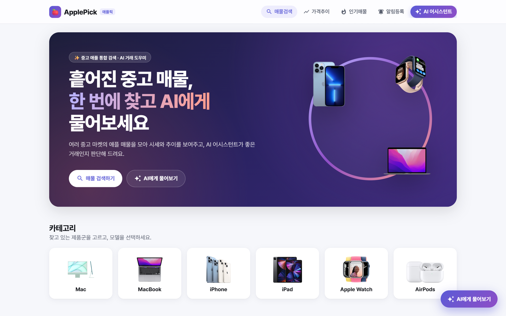
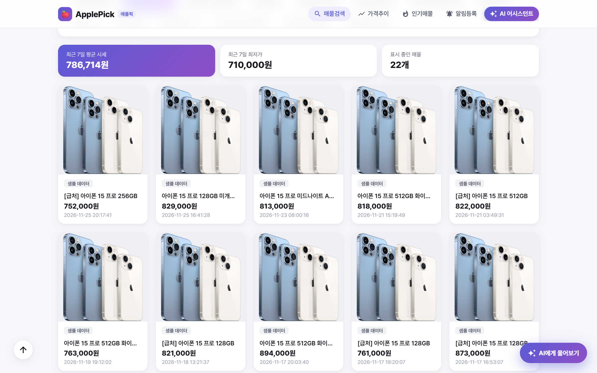
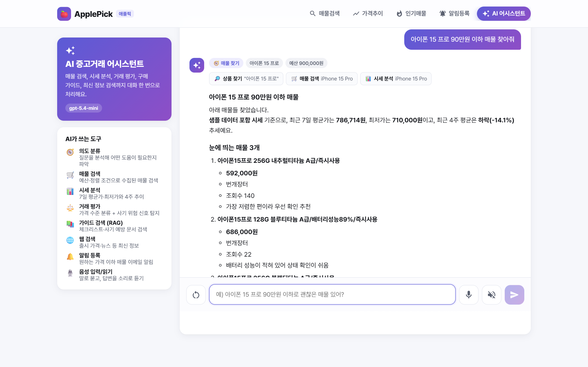
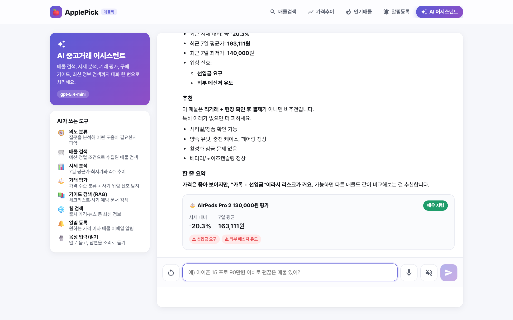
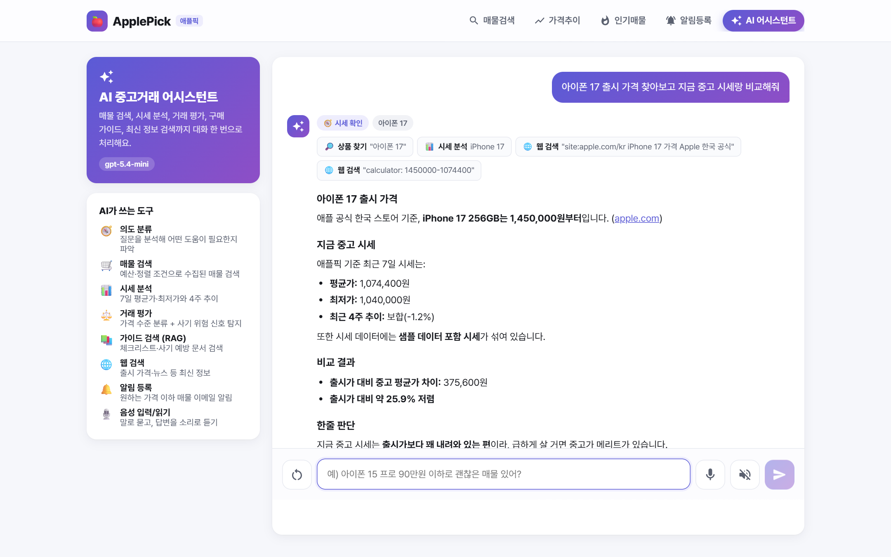

중고 마켓 통합 검색 · 시세 분석 · AI 거래 도우미
플랫폼이 나뉘어 있고, 가격 기준이 없고, 사기 위험이 크다
번개장터·당근·중고나라 등 여러 앱을 일일이 검색해야 한다. 번개장터에서 '맥북'만 검색해도 매물이 약 3,700건이다.
※ 2026.11.25 직접 측정
같은 모델도 용량·상태·배터리에 따라 가격이 제각각이고, 부품·미끼 매물이 섞여 있어 적정가를 알기 어렵다.
시세보다 지나치게 싼 가격, 선입금 요구, 외부 메신저 유도 같은 전형적인 수법을 초보자는 알아채기 어렵다.
가상 페르소나로 구매자·판매자의 니즈를 도출했습니다
졸업 전에 아이폰을 바꾸고 싶지만 예산은 90만원. 중고 거래 경험이 거의 없다.
새 맥북을 사면서 쓰던 맥북 에어를 팔려 한다. 언제, 얼마에 팔아야 할지 고민이다.
여러 마켓의 매물을 모으고, 시세를 계산하고, AI가 거래를 도와줍니다



"아이폰 15 프로 90만원 이하 매물 찾아줘"
🧭 의도: 매물 찾기예산 900,000원
① 🔎 상품 찾기 → 정확한 모델 키
② 🛒 매물 검색 → 예산 이하 실제 매물
③ 📊 시세 분석 → 평균·최저가·추이
실행 과정이 칩으로, 결과가 카드로 보입니다
실제 OpenAI 응답 화면 (gpt-5.4-mini, 약 10~15초)


수집 → 저장 → API → 웹 / AI 의 단순한 흐름, 각 단계는 교체 가능
Docker Compose 한 번으로 전체 실행
ES·DB 없이 demo.bat 하나로 실행
.env 에 OpenAI 키 하나만 입력
의도를 먼저 분류하고, 필요한 도구를 LLM이 스스로 골라 반복 실행
애플 중고거래와 무관한 질문("오늘 날씨?")은 analyze 단계에서 decline 노드로 보내 도구를 쓰지 않고 안내
ChatOpenAI · with_structured_output · bind_tools · @tool · BaseRetriever
가격·매물 숫자는 반드시 도구 결과만 사용. 샘플 데이터가 섞이면 AI가 스스로 밝힘
| 도구 | 하는 일 | 사용 예 |
|---|---|---|
| 🔎 find_product | '아이폰15프로' 같은 자유 표현 → 정확한 모델 키 | 모든 질문의 첫 단계 |
| 🛒 search_listings | 예산·정렬 조건으로 수집 매물 검색 (시세 50% 미만 미끼 제외) | "90만원 이하 매물" |
| 📊 get_market_price | 7일 평균·최저가, 4주 추이(상승/하락/보합), 데이터 출처 | "요즘 시세 어때?" |
| ⚖️ evaluate_deal | 가격 수준 6단계 분류 + 사기·긍정 신호 탐지 | "이 가격 괜찮아?" |
| 📚 search_buying_guide | RAG · 구매 가이드 문서 검색 (한국어 BM25 검색기) | "살 때 뭘 확인해?" |
| 🔔 register_price_alert | 지정가 이하 매물 이메일 알림 등록 | "80만원 이하면 알려줘" |
| 🌐 web_search | 인터넷 검색 · OpenAI 내장 도구, 출처 링크 표시 | "출시가 찾아봐" |
입력에 따라 다른 도구 조합과 다른 답변 · 실제 응답 시간 측정
| # | 질문 | AI가 쓴 도구 | 시간 |
|---|---|---|---|
| 1 | 아이폰 15 프로 90만원 이하 매물 찾아줘 | 상품 찾기 → 매물 검색 → 시세 분석 | 11~15초 |
| 2 | 에어팟 프로 2 13만원, '카톡 연락·선입금' | 상품 찾기 → 거래 평가 → 시세 → 가이드(RAG) | 9초 |
| 3 | 중고 아이폰 살 때 확인할 것 | 가이드(RAG) | 9초 |
| 4 | 아이폰 17 출시가 찾아서 중고 시세와 비교 | 상품 찾기 → 시세 → 웹 검색 | 11~15초 |
| 5 | 🎙️ (음성) 맥북 에어 80만원 이하 알림 | 상품 찾기 → 알림 등록 | 8초 |
| 6 | 오늘 날씨 어때? | 의도 분류 → 거절 분기 | 2초 |
| 영역 | 2022 | 2026 (애플픽) |
|---|---|---|
| 백엔드 | Python 3.9 · Flask 1 · ES 7 (클라이언트 버전 불일치) | Python 3.12 · Flask 3 · Elasticsearch 8.17 · MariaDB 11.4 · .env 설정 |
| 프론트엔드 | Create React App (지원 종료) · React 17 | Vite · React 18 · React Router 7 · TanStack Query 5 · 새 디자인 |
| 수집 | 번개장터 구 API · 당근 HTML (현재 둘 다 동작 안 함) | 번개장터 새 웹 API · 샘플 생성기 · 플러그인 구조 |
| 검색 정확도 | OR 검색 (다른 모델 섞임) | 제목 기준 AND 검색 + 상위 모델 제외 + 미끼 가격 필터 |
| AI | 없음 | LangGraph · LangChain · OpenAI · RAG · 웹 검색 · 음성 |
| 보안·운영 | 알림 목록 API 공개 (이메일 노출) | 관리자 토큰 보호 · Docker healthcheck · demo.bat 원클릭 실행 |
[역할 · 예) 기획 / 발표 / 사용자 조사]
[역할 · 예) 백엔드 / 크롤러 / AI 에이전트]
[역할 · 예) 프론트엔드 / UI 디자인]
Q & A